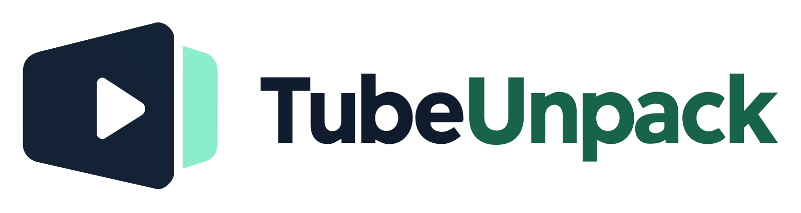

WEBSITE DESIGN REVIEW
The installer stays separate.
You are viewing the V6–V9 website comparison, shared to check its layout and demonstrations on different screens. The Windows installer is not hosted in this preview.
The download card represents TubeUnpack 4.0.0-beta.13, an unsigned private-beta candidate. Publishing this design review does not approve unrestricted distribution or complete installation and Google-account acceptance checks.
If you have been invited to test the application, ask the person who invited you for the approved installer handoff. There is no signup or automatic download here.